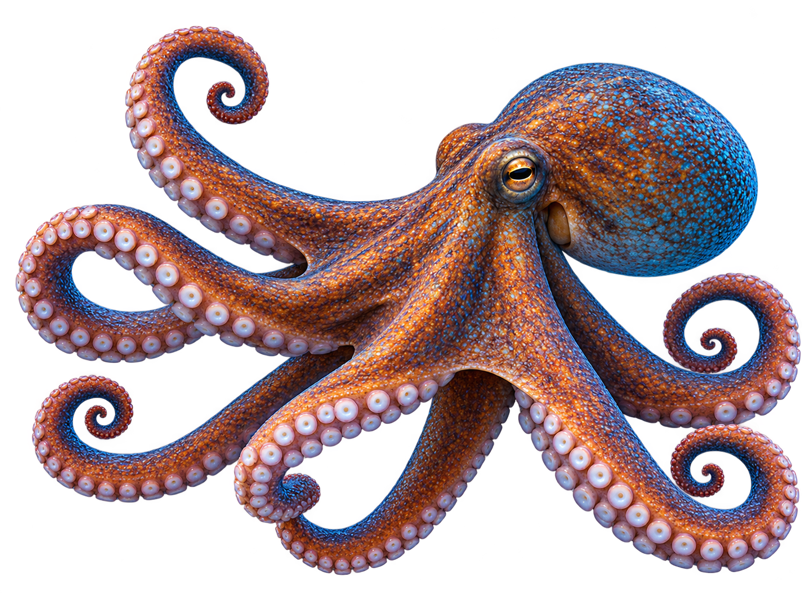
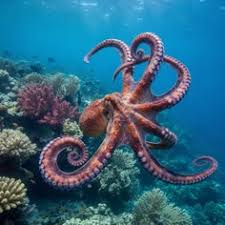
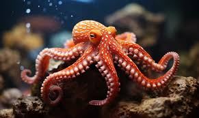
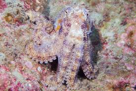

Polvo
Octopoda
O polvo é um animal marinho conhecido por seus oito braços, grande inteligência e capacidade de mudar de cor. Vive em diferentes ambientes oceânicos e utiliza seus tentáculos para se locomover, capturar alimentos e explorar o ambiente.

Curiosidades
Alimentação
Alimentam-se principalmente de crustáceos, peixes, moluscos e outros pequenos animais marinhos.
Tempo de vida
A maioria das espécies de polvo vive entre 1 e 5 anos, dependendo da espécie.
Camuflagem
Podem mudar rapidamente de cor, padrão e textura para se camuflar e se proteger de predadores.
Nascimento
As fêmeas colocam centenas ou milhares de ovos e permanecem próximas a eles para protegê-los até a eclosão.
Importantes para o ecossistema
Os polvos ajudam a manter o equilíbrio dos ecossistemas marinhos, controlando as populações de suas presas.
Habitat
Podem ser encontrados em diversos oceanos, principalmente em regiões próximas ao fundo do mar, como recifes, cavernas e áreas rochosas.


Você Sabia?
Os polvos possuem três corações e sangue azul, características que os tornam animais únicos no mundo marinho.
